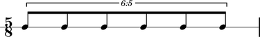

The Abjad _ContainerDurationInterface class
The Abjad _ContainerDurationInterface models the functionality that all container duration interfaces share.
Public interface
Attributes
contents
multiplier
prolated
prolation
prolations
Examples
abjad> container = Container(Note(0, (1, 8)) * 5) abjad> tuplet = FixedDurationTuplet((5, 8), [container, Note(0, (1, 8))]) abjad> measure = Measure((5, 8), [tuplet]) abjad> staff = RhythmicStaff([measure]) abjad> container (c'8, c'8, c'8, c'8, c'8) abjad> show(staff)
contents
abjad> container.duration.contents Rational(5, 8)
multiplier
abjad> container.duration.multiplier Rational(1, 1)
prolated
abjad> container.duration.prolated Rational(25, 48)
prolation
abjad> conatiner.duration.prolation Rational(5, 6)
prolations
abjad> conatiner.duration.prolation [Rational(5, 6)]
Comments
The container duration interface implements a trivial read-only multiplier attribute, always equal to 1, to clean up parent-climbing algorithms like excise( ).
See the _ContainerDurationInterface class in containers/duration.py for implementation details.